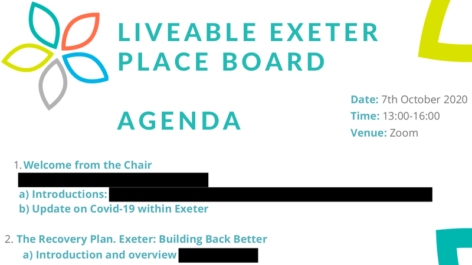
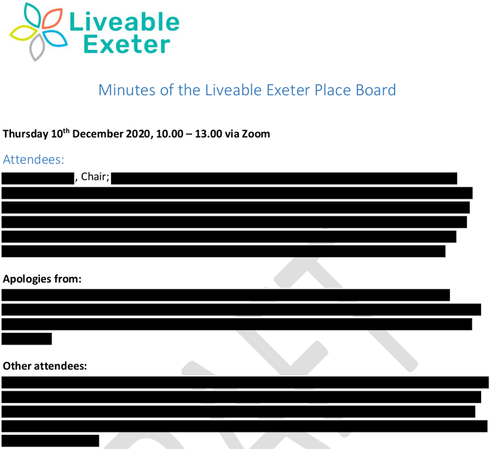

Last week Exeter Observer published the latest instalment in a series scrutinising the Liveable Exeter Place Board, an unelected and unaccountable body that meets in private, does not publish its discussions or decisions and is taking responsibility for major policies which will determine the city’s future.
It examined the secretive and informal way in which the board’s members are selected and appointed, in contrast with other local public bodies, and exposed similarities with the current Conservative government’s approach to appointments and procurement, the much-criticised “chumocracy”.
Despite Exeter City Council’s failure to respond to freedom of information requests about the activities of Liveable Exeter Place Board, which we continue to challenge, we have gathered evidence which shows that the board is a de facto decision-making and governance body which exercises public functions with the potential to affect everyone who lives and works in Exeter.
 Liveable Exeter Place Board agenda October 2020 (redacted by information request responder)
The board’s extraordinary reach is reflected in its extensive terms of reference. These were drafted in secret and enacted months before being presented to the council as a fait accompli.
In July 2019 the council’s Executive committee agreed the following recommendation, which was adopted without discussion at a full council meeting two weeks later:
“Council approve[s] the establishment of a board to oversee the Liveable Exeter Garden City programme, the proposed composition of the board and the draft terms of reference be delegated to the CE&GD [Chief Executive & Growth Director] in consultation with the Leader of the Council and be reported back to a future meeting of Executive.”
Eleven months then passed without the presentation of a report on the board’s membership or its terms of reference.
The board had already met seven times when St David’s councillor Diana Moore asked about the missing report at an Executive meeting in June 2020. Council leader Phil Bialyk said: “The original draft terms of reference agreed by Council have not been amended in any meaningful way. Hence we have not reported back to Executive”.
His response neither addressed the issue of the board’s membership nor the fact that the Council had never agreed its terms of reference.
However the board then did change its terms of reference, at its meeting the following month, when it decided to take over governance of the Exeter & Cranbrook Sport England local delivery pilot. The paper proposing this change was dated the same day as the meeting at which the council leader had said no changes had been made.
The proposal to replace the original Sport England programme board with the Liveable Exeter Place Board described the latter as “the driving force behind the recovery process for the city”. It said: “Liveable Exeter Place Board … defines what needs to be done … has overall responsibility and determines policy, strategy, parameters and resource requirements. It maintains a common purpose, assesses options and evaluates progress.”
This decision was not reported to the city council’s Executive until September 2020, two months later, when the Executive was also presented, for the first time, with the board’s (by then extended) membership.
By this time the board had met on nine occasions and discussed a wide range of topics, including Exeter Vision 2040, which forms part of the city council’s corporate plan, the Liveable Exeter property development scheme for 12,000 new dwellings in the city, Devon County Council’s Exeter Transport Strategy 2020-30, the COVID-19 test and trace programme and the redevelopment plans for CityPoint (aka East Gate), Marsh Barton industrial estate and the area around St David’s station.
At subsequent meetings the board discussed the Exeter City Fund (a plan to sell hundreds of millions of pounds’ worth of public sector assets to finance the Liveable Exeter property development scheme), the Arts Council England Cultural Compact and Exeter City of Literature, a “potential opportunity to deliver enhanced recreational and natural opportunities along the Exe Estuary” and the delivery of the Net Zero Exeter plan by Exeter City Futures.
In March this year it approved the development of a business case for an Exeter city centre “innovation district” intended to help promote the CityPoint redevelopment, which will involve the demolition of the remaining buildings on Paris Street and Sidwell Street beside the bus station and leisure centre. This decision has yet to appear on a city council meeting agenda.
The board has even discussed how to respond to difficult questions about its membership, role and remit from Exeter Observer, as well as how to deal with press enquiries in future. The plan was for the city council to release a “brief, high-level statement” after each board meeting from December 2020 onwards, however only one such statement has since been published.
It said that the meeting included remarks by the chair and a presentation on the city’s cultural strategy but says nothing about the meeting’s six other substantive items of business.
CityPoint redevelopment scheme drawing
Perhaps most significantly of all, the board also oversaw the development of the city’s “Building Exeter Back Better” pandemic recovery plan.
In June 2020, the city council’s Executive was presented with an initial draft of this plan, which ran to just over two pages in length.
The council leader, Phil Bialyk, said that “all members would be fully informed via Executive and Council through further reports and that there remained appropriate mechanisms for the plan to be considered through the council’s scrutiny process.”
A completed draft of this plan was ready for discussion by the time the board met in October 2020. The covering email which was sent to board members with the meeting agenda and papers beforehand included a request “not to share the draft recovery plan beyond yourselves at this time and until the board has had the opportunity to review and endorse the document.”
The board approved the plan in principle, but also asked the project director, who is an Exeter City Council employee, to make some amendments, particularly to the “scale” of the plan’s spending priorities. The project director agreed to review these details “prior to presentation to ECC’s Executive”.
By the time the plan was presented to the council’s Executive, in November 2020, a month after the Liveable Exeter Place Board meeting which had approved it, it was 80 pages long and outlined more than £500 million in spending priorities.
No interim reports had been presented to city council members via Executive or Council, and at no point had the plan been considered through the council’s “scrutiny process”.
 Liveable Exeter Place Board minutes December 2020 (redacted by information request responder)
The report accompanying the pandemic recovery plan said the Liveable Exeter Place Board had “endorsed” and “adopted” it, and its development had been “co-ordinated by council officers, with input from other key city stakeholders.”
In fact just four city council officers had been tasked with co-ordinating seven working groups, each of which was chaired by a Liveable Exeter Place Board member, with input from just under 100 stakeholders in all.
It did not explain why the board had, in effect, signed off on the plan (complete with requested amendments) before its presentation to the council’s Executive for approval.
Throughout the plan development process the city council used words such as “endorsed”, “adopted” and “co-ordinated” in this context. Earlier this year it described the board as having “shaped” Exeter’s recovery plan.
However it sometimes fails to filter out what amount to Freudian slips in its statements about the board’s true status.
In June last year it said that council officers were “leading the work on the recovery plan” then, a week later, that the plan’s development was being “led by the Liveable Exeter Place Board”.
Both these things cannot be true at the same time, in the same way as the city council cannot be taking decisions that the Liveable Exeter Place Board has already made.
The transformation of what was initially envisaged as a steering group for a major housing programme into a multi-purpose body overseeing Exeter’s post-pandemic recovery as well as its transport, infrastructure, economic, investment, decarbonisation, health and cultural strategies, while acting as a single point of contact with government and its departments and planning £500 million of expenditure, must surely constitute a “meaningful” change to its terms of reference and consequent reach.
However whether the Liveable Exeter Place Board is a public sector body to which the normal rules of governance should apply is less a question of semantics and more a question of whether it meets government definitions of what constitutes such bodies.
The council maintains that the board “is not an Exeter City Council board”. This is correct in the strict sense that Liveable Exeter Place Board was not formally constituted by a resolution of the Council.
It is nevertheless likely that Liveable Exeter Place Board is a public sector body.
Entities are classified as public or private sector according to Office of National Statistics criteria focussed on the level of direct or indirect control over the entity being classified and who has that control. Key indicators include:
- the ability to appoint those in control, or those who determine the policy of the entity
- a right to be consulted over such appointments, or to have a veto over appointments
- the provision of funding accompanied by rights of control over how that funding is spent
- a general right to control the day-to-day running of the body.
Once a body is classified as public sector, it is allocated to a sub-sector based on its characteristics. The local government sub-sector “includes those types of public administration that only cover a specific locality and any non-market bodies controlled and mainly financed by them”.
Exeter City Council’s chief executive officer and leader drew up the board’s terms of reference and determined (and continue to determine) its membership, as we saw last week.
Exeter City Council provides the board’s secretariat, publishes its website complete with council contact email address and phone number and responds on its behalf to enquiries from the press and others.
And Exeter City Council finances Liveable Exeter Place Board, as per the board-related expenditure recorded in its corporate accounts.
Notwithstanding the council’s semantic sophistry around the board’s true role, and whatever the theology of the board’s status, its actions and their impacts ultimately speak louder than words.
Nothing in the evidence we have so far gathered has changed our view that Liveable Exeter Place Board is a de facto decision-making and governance body which exercises public functions and constitutes the outsourcing of Exeter local government.
Many of the board’s members have significant land and property interests, while much of Exeter’s civil society, its large public sector workforce and those who are on the wrong end of changes that are being made in the city remain outside the room.
The board’s proposals, discussions and conclusions have the potential to impact the lives of everyone in Exeter and beyond, yet it is unelected, meets in private, does not publish its agendas, reports or minutes, and is entirely unaccountable.
Exeter Observer continues to investigate exactly what goes on in Liveable Exeter Place Board meetings and with what consequences, despite Exeter City Council’s unforthcoming stance on freedom of information, and will continue to publish its findings in the public interest.


{kind=link}